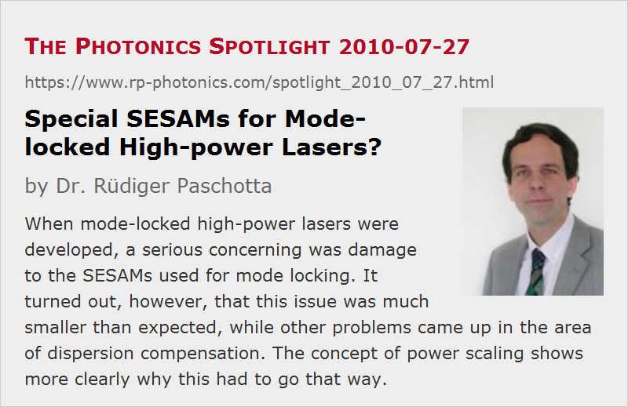

Special SESAMs for Mode-locked High-power Lasers?
Posted on 2010-07-27 as a part of the Photonics Spotlight (available as e-mail newsletter!)
Permanent link: https://www.rp-photonics.com/spotlight_2010_07_27.html
Author: Dr. Rüdiger Paschotta, RP Photonics Consulting GmbH
Abstract: When mode-locked high-power lasers were developed, a serious concerning was damage to the SESAMs used for mode locking. It turned out, however, that this issue was much smaller than expected, while other problems came up in the area of dispersion compensation. The concept of power scaling shows more clearly why this had to go that way.
Ref.: encyclopedia articles on semiconductor saturable absorber mirrors, mode-locked lasers, high-power lasers

During my time as a senior researcher at ETH Zürich (from 1997 to 2005), the development of mode-locked high-power lasers was one of my top priorities. Initially, a major concern was that the semiconductor saturable absorber mirrors (SESAMs) used for mode locking might not survive operation at high power levels. After all, quite a few of them had been burned even at moderate power levels. So my boss was convinced that it would be essential to first study more deeply the damage limitations of different device designs (with extensive damage measurements) and then use the resulting knowledge for hopefully finding new designs and material combinations for making suitable high-power SESAMs.
A nightmare ahead …
I quickly realized that this path would be very slow and painful. Measuring damage thresholds in such devices would be a very time-consuming enterprise, for various reasons:
- It is not obvious how exactly to monitor damage. You actually want to monitor quite a number of quantities, including the saturation behavior, nonsaturable losses, maybe also scattered light, etc.
- Of highest interest is not the threshold for immediate damage, but for long-term degradation – and that naturally takes very long to find out.
- All this needs to be done with many devices.
(For crystals and mirror coatings, I discussed such issues in an earlier spotlight article.)
Clearly, for acquiring a comprehensive understanding of the dependence on many details, one would spend many years. And who knows whether this would really lead to ideas for improved designs? For such reasons, I wasn't keen at all to follow this suggested path.
… but small adaptations are sufficient
Fortunately, it turned out that surprisingly small adaptations were sufficient to get SESAMs operating reliably at very high power levels. First, I realized that the optical intensities would not have to be any higher than in mode-locked low-power lasers; you need to saturate a SESAM, but not to over-saturate it. So you just increase the mode area on the SESAM in proportion to the power level (or more precisely, the intracavity pulse energy).
The second insight was that due to the geometry of a SESAM – similar to that of a thin-disk gain medium – its temperature would not rise that much when the power was increased while increasing the mode area by the same amount. This is essentially because the thickness of the heat-conducting semiconductor layer is not large compared with the typical mode diameters. Thermal problems were sufficiently under control when simply using a relatively small (but not very small) modulation depth and by keeping the nonsaturable losses reasonably low. In the end, we actually used rather similar SESAM designs as previously for low-power lasers, while reaching average power levels up to 80 W (E. Innerhofer et al., Opt. Lett. 28 (5), 367 (2003)). Recently, my successors demonstrated even 141 W (C. R. E. Baer et al., Opt. Lett. 35 (13), 2302 (2010)).
The Unexpected Problem: Dispersion Compensation
Curiously, we had much more of a problem at high powers in a context where it was really unexpected: dispersion compensation. That was needed for sub-picosecond pulse generation, but different methods for dispersion compensation turned out not to work well at very high power levels. Years later, I more clearly understood why SESAMs caused less trouble than expected while dispersive mirrors were more difficult than expected. The point is that SESAMs are power-scalable, while dispersive mirrors (at least with thick substrates) are not. So as you increase the power levels, thermal and other problems with SESAMs don't get that much worse, while thermal effects on dispersive mirrors increase quite a lot. Had I clearly understood the concept of power scaling of lasers at that early time, I would have a better idea about what would be expecting our team.
This article is a posting of the Photonics Spotlight, authored by Dr. Rüdiger Paschotta. You may link to this page and cite it, because its location is permanent. See also the RP Photonics Encyclopedia.
Note that you can also receive the articles in the form of a newsletter or with an RSS feed.
Questions and Comments from Users
Here you can submit questions and comments. As far as they get accepted by the author, they will appear above this paragraph together with the author’s answer. The author will decide on acceptance based on certain criteria. Essentially, the issue must be of sufficiently broad interest.
Please do not enter personal data here; we would otherwise delete it soon. (See also our privacy declaration.) If you wish to receive personal feedback or consultancy from the author, please contact him e.g. via e-mail.
By submitting the information, you give your consent to the potential publication of your inputs on our website according to our rules. (If you later retract your consent, we will delete those inputs.) As your inputs are first reviewed by the author, they may be published with some delay.
|  |
If you like this page, please share the link with your friends and colleagues, e.g. via social media:
These sharing buttons are implemented in a privacy-friendly way!